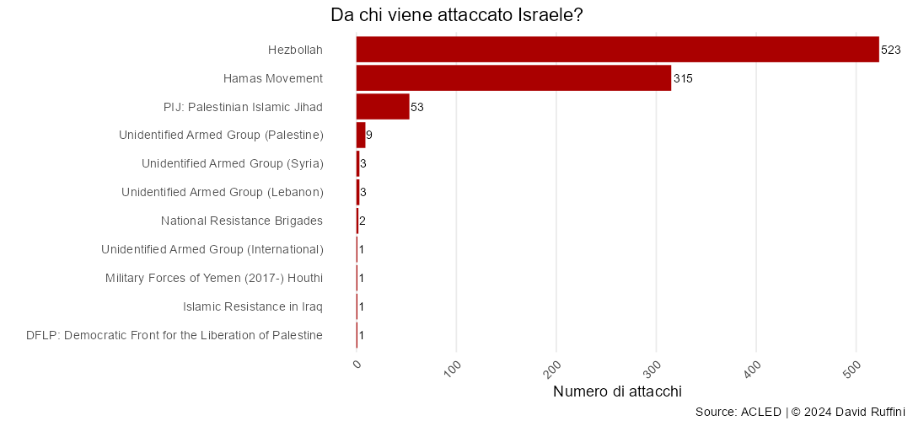

L'altro fronte
Israele e Libano

Numero di attacchi a Israele per provenienza.

Attacchi tra Israele e Hezbollah.


Ciao!
Mi chiamo David, sono uno studente di Statistica e in questo sito raccoglierò le mie analisi su argomenti che trovo di mio interesse.
I motivi principali che mi hanno spinto a pubblicare le mie ricerche sono il voler dare ordine a ciò che prima vagava solamente tra le cartelle del desktop e condividere con gli altri i risultati delle suddette indagini.
Se siete in disaccordo, riconoscete un mio errore o per qualsiasi altro motivo volete scrivermi, potete contattarmi nei canali che ho messo in fondo alla pagina.